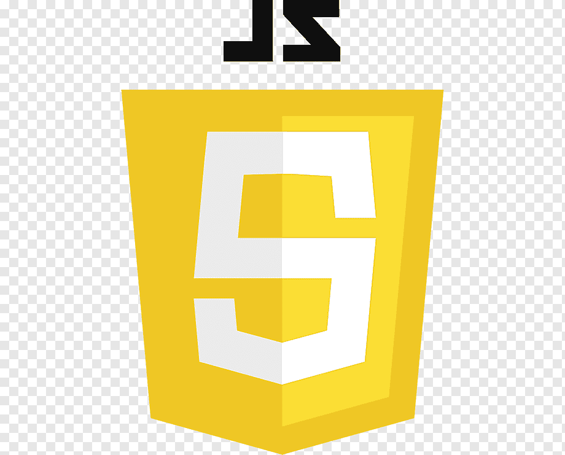

| Frontend dasturlash texnologiyalar | |
|---|---|
| HTML-frontend yo'nalishining asosiy texnologiyasi bo'lib,
unda asosan interfeysning asosi quriladi
|
|
| CSS-frontend yo'nalishining interfeys dizayniga javob
beradigan asosiy texnalogiyasi
|
|
|  | JavaScript-frontend yo'nalishining interfeysni jonlantirish
uchun mo'ljallangan dasturlash tili
|